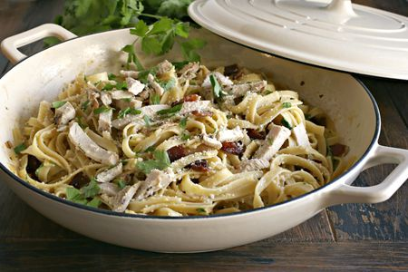

Chicken Carbonara

Description
Creamy pasta without cream? It's possible! This chicken carbonara uses eggs, Parmesan, and pasta cooking
water to create a dreamy, creamy sauce.
Ingredients
- 1 tablespoon plus 1 teaspoon salt, divided
- 2 large eggs, at room temperature
- 1/2 cup freshly grated Parmesan or Pecorino cheese, plus more for serving
- 1 1/2 teaspoons freshly ground black pepper, divided
- 2 tablespoons olive oil
- 5 ounces (150g) cubed bacon, guanciale, or pancetta
- 2 cloves garlic, thinly sliced
- 1 boneless, skinless chicken breast (about 1 pound), trimmed of excess fat and cut into 1/2-inch pieces
- 1/2 pound dry spaghetti
Steps
- Get the water boiling:
- Set a large pot of water (about 3 quarts) with 1 tablespoon salt over high heat to boil. Move onto the next steps while you wait for the water to come up to a boil.
- Prepare the egg mixture:
- In a small bowl, whisk together the eggs, 1/2 cup Parmesan, and 1 teaspoon black pepper. Set it aside.
- Brown the bacon and chicken:
- Set a large frying pan over medium heat. Once hot, add 1 tablespoon olive oil and the bacon. Cook, stirring often, until the bacon is crispy and browned, about 8 minutes. Add the garlic and cook for an additional 2 minutes, stirring often.
- Transfer the bacon and garlic into a medium bowl, leaving behind about 2 tablespoons of bacon grease in the pan. Not enough grease? Add the remaining 1 tablespoon olive oil.
- Set the pan over medium heat and add the chicken. Season it with the remaining 1 teaspoon salt and 1/2 teaspoon black pepper. Cook the chicken until golden brown all around and cooked through, 6 to 8 minutes.
- Transfer the chicken into the bowl with the bacon and garlic. Turn off the heat and don’t wash the pan. You’ll toss the carbonara in it.
- Meanwhile, cook the spaghetti:
- As soon as the water comes to a boil, add the spaghetti. Cook it until al dente; for me, that’s usually 2 minutes less than the time stated on the package. When the spaghetti is cooked, scoop out 1 cup of the cooking water and set it aside. Then, drain the pasta into a colander set in the sink.
- Toss the carbonara:
- Immediately transfer the drained spaghetti, while still hot, into the frying pan. Whisk in 2 tablespoons of the hot cooking water into the egg mixture. Then pour the egg mixture over the pasta. Use tongs to toss and coat. Add more hot cooking water, as needed, to create a glossy, creamy, and smooth sauce that coats the spaghetti. You may end up using the entire cup!
- Serve:
- Add chicken and bacon and toss to combine. Serve warm, garnished with freshly grated Parmesan, if desired.